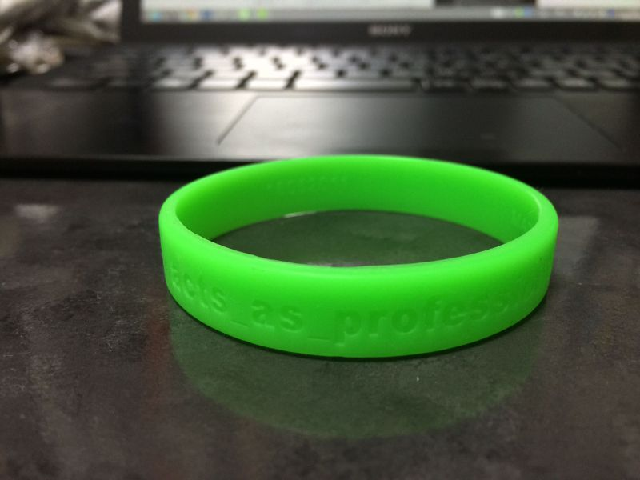

TDDBC 仙台 the 3rd に行ってきました #tddbc¶
行ってきました。当日 TDD で課題を進めた過程は以下を見てもらえればと思います。 https://github.com/toshi-kawanishi/tddbc_sendai_3rd
ひとまず行ってみた感想としては、
自分が普段触れない言語でも、同じ課題に対してどのように書くのかというのがみれて本当によかった。
ペアプロ頭使うので疲れる。1週間で40時間以上働けないというのも納得。
今回使わなかったけど PyCharm や IntelliJ、 pytest はやっぱり便利そう。
単純に言語、FW、ツールの知識がまだまだ足りないので強化していく。
仙台のコミュニティ熱い。遠方のは初めて行ったけど良くしていこうというのは変わらない。
このあとはつらつらと当日の様子を振り返ってみる。
当日の Pythonista 達¶
Python 組は自分とTAさんを含めて4人いて、2チームで行われました。 その Python 組は以下(自分を除く)。
@_nishigori さん
@CortYuming さん
@tosikawa さん
自分は @tosikawa さんととペアを組ませて頂きました。
当日やったこと¶
導入(午前)¶
午前中は以下の2つが行われました。
@t_wada さんによる基調講演
Java × JUnit での TDD デモ
これまで TDD のデモの題材は FizzBuzz がお決まりだったようですが、 今回は私達も取り組む課題の一番初めの問題を実際に取り組んでいきました。
これは「TDD ってこんな感じで進めていくんだ」という雰囲気を掴むとともに、 実際に自分たちはこのようなアプローチで進めていくんだ というのがわかりやすくて非常によかったです。
実践(午後)¶
午後はペアプロ、コードレビューを2回行った後、ふりかえりという流れでした。 自分は Python 2.7.5 × unittest でペアプロに臨みました。理由は以下。
pytest は最近人気があるが、 unittest ならテストではほぼ使われている。
python2.7 で unittest がかなり良くなった。
unittest は Python の標準ライブラリとして導入されている。
しかしお互い Vim派 × Emacs派 だったので、 どのようにペアプロを進めるか考えるうちに以下のように。
せっかくなので PyCharm を使ってやろうとする。
しかし PyCharm の設定をどのようにすればわからなくて積む。
お互いに慣れた環境で試した方がいいだろうとなる。
github を使ってコードを push → pull 方式で進めようとする。
自分がドライバー、 @tosikawa さんがナビゲーター役で進める。
なんだかんだ最初から最後まで自分がドライバー、 @tosikawa さんがナビゲーター役で進む。
という感じで課題を進めていきました。 当日課題は2まで公開されていましたが、 自分たちは課題1の最後でリファクタリングした段階で終了しました。
実践を終えて¶
結論から言うと ペアプロするにも、お互いに普段使い慣れている環境使った方がいいよね と思いました。
他のペアでもいらっしゃったようですが、 VCS 管理して push → pull コードを共有し、 でお互い慣れた環境で進めると作業を効率的に進められるなと思いました。
しかし学習コストの問題もありますが、IDEを使っている人たちを見ると、使いこなすと本当に便利そうだなとも思いました。 Python を使っていると PyCharm 便利 という話はよく聞くので、一回覚えたいところです。
それとペアプロで課題に取り組む中で TODO として以下の点が残ったので、 時間を見て取り組んで行きたいです。(課題も追加されたものがまだまだありますしね！)
入力値で文字や日付が入ってきた場合どうするか。
テスト名リファクタリング。
1つのテストメソッドにつき、assertを1つにする(どのエラーで失敗したかわかりやすくする)
contains を in で実装する。
懇談会<¶
いろいろ話しましたが、うまくまとめられないので、思いついたものをPickup
実は Python 組はみな(自分を除く)仕事では ruby も使うというちょっとあれな感じ。
Capistrano 開発止まっちゃうから、やっぱり Fabric かなというお話。
構成管理ツールつながりで Chef、Ansible のお話。
「IntelliJ イイよ！」というお話。
コード書く時はエディタで書いて、他の人が書いたコード読むのにIDEは使う。
IntelliJ の使い方は Youtube にあるので、それを見て便利さを体感すると良い。
設定はデフォルトのものを使い慣れてからいじると良い。
他の PyCharm や RubyMine も基本的な設定なんかは一緒だったりするので、IntelliJ を使えれば他も使える。
その言語専用にと PhpStorm や RubyMine 買ったけど、 IntelliJ があれば問題ない。
むしろ対応してない言語使う時、SyntaxHighlight が効かず困るので IntelliJ の方がいい。
ビアバッシュ形式は参加しやすいので非常に良い。
前日から募集したにも関わらず、LT飛び入り含め7名も発表してすごい。
やはり夜行バスは疲れるからやっぱり新幹線で移動したほうがいい。